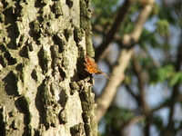
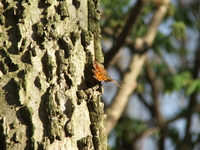

Next Photo
-
Vote
Budding Whites and Yellows of Spring
The two subjects in the photo add diversity to the shot. The primary subject of white flowers bring the contrast of light versus dark to the photo. The theme of flowers is carried into the picture and life and growth are conveyed to the viewer. The yellow in the background adds to the color contrast of the shot with the green.
More...
Title: Budding Whites and Yellows of Spring
Description: The two subjects in the photo add diversity to the shot. The primary subject of white flowers bring the contrast of light versus dark to the photo. The theme of flowers is carried into the picture and life and growth are conveyed to the viewer. The yellow in the background adds to the color contrast of the shot with the green.
Keywords: yellow green white flowers spring budding light dark contrast
Hidden: n
Date added: Mon Apr 03 18:25:41 CDT 2006
Date taken: Mon Apr 03 14:55:40 CDT 2006
Camera: FUJIFILM.FinePix S5100 .
Resolution: 2272x1704
Mode:
Shutter speed: 882/100
Flash: 16
Exposure time: 10/4500
Iso: 100
Metering: 5
Aperture: 500/100
Focal length: 1960/100
Artist: NathanielGuy Mahieu
Copyright: 2006 NathanielGuy Mahieu
Views: 3849

 
